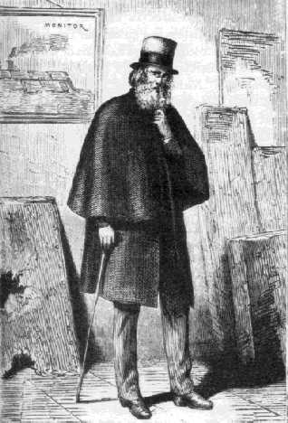
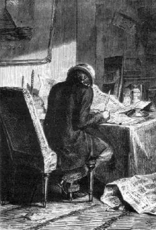

Capítol X
UN ENEMIC PER A VINT-I-CINC MILIONS D'AMICS
El públic americà
tenia un viu interès pels més petits detalls de l'empresa del
Gun-Club. Seguia dia per dia les discussions del Comitè. Els més
senzills preparatius d'aquest gran experiment, les qüestions de xifres
que promovia, les dificultats mecàniques per a resoldre, en un mot, "l'execució
del gran projecte", heus aquí el que l'apassionava en el més
alt grau.
Més d'un any havia de transcórrer entre el començament
dels treballs i llur acabament; però aquest lapse de temps no seria pas
pobre d'emocions. Entre l'emplaçament a escollir per a la foneria, la
construcció del motllo, la fosa del Columbiad i el seu molt perillós
carregament n'hi havia ben bé prou per a agullonar la curiositat pública.
El projectil, una vegada engegat, fugiria de les mirades en poques dècimes
de segon; després, el que li esdevindria, com es mantindria per l'espai
i de quina manera arribaria a la Lluna, és el que només un petit
nombre de privilegiats veurien amb els seus propis ulls. Així, doncs,
els preparatius de l'experiment i els detalls precisos de l'execució
constituïen aleshores el veritable interès.
Tot d'una, però, l'atracció purament científica de l'empresa
fou sobreexcitada per un incident.
Tothom sap quines nombroses legions d'admiradors i d'amics el projecte de Barbicane
havia aplegat al seu redós... Per tant, per honorable, per extraordinari
que aquell fos, aquella majoria no era pas la unanimitat. Un sol home, un només
en tots els Estats de la Unió, protestà contra la temptativa del
Gun-Club. Va atacar-la amb violència a cada ocasió, i la naturalesa
humana és de tal manera, que Barbicane fou més sensible a l'oposició
d'aquest únic que als aplaudiments de tots els altres.
Per damunt de tot, ell coneixia prou bé el motiu d'aquella antipatia
i d'on provenia aquella enemistat solitària, perquè era personal
i ja de molt de temps abans, i, en fi, per quina rivalitat d'amor propi havia
pres naixença. El president del Gun-Club no l'havia vist mai, aquell
enemic perseverant. Era una sort, car l'encontre d'aquests dos homes hauria
tingut certament conseqüències desagradables. Aquell rival era un
savi com Barbicane, un natural superbiós, atrevit, violent, un pur ianqui.
L'anomenaven el capità Nicholl i residia a Filadèlfia.

El capità Nicholl
Ningú no ignora la curiosa lluita que s'entaulà durant la guerra
federal entre el projectil i la cuirassa dels navilis blindats. Aquell anava
destinat a foradar, i aquesta decidida a no deixar-se foradar. D'ací
pervingué una transformació radical de la marina en els Estats
dels dos continents1. El projectil i la planxa lluitaren
amb un acarnissament sense parió; l'un engrandint-se i l'altra engruixint-se
en una proporció constant. Els navilis, armats de peces formidables,
partien devers el foc a recer de llur casc invulnerable. Els Merrimac, els Monitor,
els Ram-Tenesse, els Weckausen2, llençaven projectils
enormes, després d'ésser cuirassats contra els projectils dels
altres. Feien el dany que ells no volien que els altres els fessin. Principi
immoral sobre el qual reposa tanmateix tot l'art de la guerra.
Ara bé, si Barbicane fou un gran fonedor de projectils, Nicholl fou un
gran forjador de planxes. L'un fonia nit i dia a Baltimore, i l'altre forjava
dia i nit a Filadèlfia. Cadascú seguia un corrent d'idees essencialment
oposat.
Tan aviat com Barbicane inventava un nou projectil, ja Nicholl inventava una
nova planxa. El president del Gun-Club es passava la vida a obrir forats, i
el capità a impedir-ho. D'ací una rivalitat de tots els instants
que arribava fins a les persones. Nicholl s'apareixia en somnis a Barbicane
sota la forma d'una cuirassa impenetrable i contra la qual ell s'estavellava,
i Barbicane, en els somnis de Nicholl, com un projectil que el travessava de
banda a banda.
Així i tot, per bé que ells seguissin dues línies divergents,
aquells savis haurien acabat per retrobar-se a despit de tots els axiomes de
geometria, si bé llavors seria en el terreny del duel. Molt sortosament
per a aquells ciutadans tan útils a llur país, una distància
de cinquanta a seixanta milles els separava un de l'altre, i ja llurs amics
omplien el camí de dificultats perquè no es retrobessin mai.
Ara, quin dels dos inventors havia triomfat per damunt de l'altre era cosa que
no se sabia prou bé. Els resultats obtinguts feien difícil una
apreciació justa. Malgrat tot, semblava a fi de comptes que la cuirassa
devia acabar per cedir a la bala.
Nogensmenys, hi havia dubte per part de les persones que eren enteses. En els
darrers experiments, els projectils cilindrocònics de Barbicane es clavaren
com agulles sobre les planxes de Nicholl, i aquell dia el forjador de Filadèlfia
es cregué victoriós i no tingué prou paraules de menyspreu
per al seu rival. Però quan aquell, poc després, substituí
les bales còniques per simples obusos de sis-centes lliures, el capità
hagué d'humiliar-se. Certament, aquells projectils, encara que animats
d'una velocitat mediocre3, trencaren, foradaren i feren
saltar a trossos les planxes del millor metall.
Així estaven les coses en aquest punt en què la victòria
semblava ésser per a la bala, quan la guerra va acabar-se el mateix dia
en què Nicholl enllestia una nova cuirassa d'acer forjat! Era una obra
d'art en el seu gènere, car desafiava tots els projectils del món.
El capità la féu transportar al polígon de Washington,
tot provocant el president Barbicane a trencar-la. I Barbicane, havent fet la
pau, no volgué fer la prova de l'experiment.
Llavors Nicholl, furiós, oferí d'exposar la seva planxa al xoc
de les bales més inversemblants, plenes, buides, esfèriques o
còniques. Nou refús del president, que, decididament, no volia
comprometre el seu darrer èxit.
Nicholl, exasperat per aquell entossudiment inqualificable, volgué temptar
Barbicane deixant-li totes les oportunitats. Proposà de posar la planxa
a dues-centes iardes del canó, i Barbicane s'obstinà en la seva
negativa. A cent iardes? Ni que fos a setanta-cinc.
-A cinquanta - cridà el capità per la veu dels diaris -, a vint-i-cinc
iardes, la meva planxa, i jo al darrera!
Barbicane respongué que, àdhuc que el mateix capità Nicholl
s'hi col·loqués al davant, tampoc no dispararia.
Nicholl, davant d'aquesta rèplica, no es pogué contenir més.
Acudí a les personalitats i insinuà que la pusil·lanimitat
era indivisible; que l'home que refusa de fer un dispar de canó està
ben a prop de tenir por i que, en resum, aquests artillers que es baten actualment
a sis milles de distància han canviat prudentment el coratge individual
per les fórmules matemàtiques, i que per damunt de tot hi ha tanta
bravesa a esperar tranquil·lament una bala darrera d'una planxa com a
engegar-la segons totes les regles de l'art.
A aquestes insinuacions, Barbicane no digué res; potser àdhuc
no arribà a tenir-ne esment, car per aquells temps els càlculs
de la seva gran empresa l'absorbien per complet.
Quan féu la seva famosa comunicació al Gun-Club, la ira del capità
Nicholl va arribar al seu paroxisme. S'hi barrejava una gran gelosia i un sentiment
d'impotència absoluta! Com poder inventar alguna cosa de millor que aquell
Columbiad de nou-cents peus! Quina cuirassa resistiria un projectil de vint
mil lliures! Nicholl romangué de moment espaordit, anorreat, desfet sota
aquella "canonada", però es reféu i resolgué
d'esclafar la proposició de Barbicane amb el pes dels seus arguments.
Va atacar, doncs, molt violentament els treballs del Gun-Club; escriví
nombroses lletres que els diaris no refusaren de publicar. Assajà d'enderrocar
científicament l'obra de Barbicane. I, un cop estigué la guerra
entaulada, cridà en ajuda seva raons de tota mena i, la veritat sigui
dita, molt sovint enganyoses i en mal sentit.

Nicholl escrivint cartes contra el Gun-Club
De moment, Barbicane fou molt violentament atacat en les seves xifres. Nicholl
intentà de provar per A + B la falsedat de les seves fórmules
i va acusar-lo d'ignorar els principis rudimentaris de la balística.
Entre altres errors, i segons els seus càlculs, Nicholl li demostrava
que era absolutament impossible de donar a un cos qualsevol una velocitat de
dotze mil iardes per segon; sostingué, amb l'àlgebra a la mà,
que, àdhuc amb aquesta velocitat, un projectil tan pesant mai no traspassaria
els límits de l'atmosfera terrestre! No arribaria tan sols ni a trenta-cinc
quilòmetres! Més encara. Considerant la velocitat com a cosa feta
i per tant com a suficient, l'obús no resistiria la pressió dels
gasos desenrotllats per la inflamació d'un milió sis-centes mil
lliures de pólvora, i, si arribava a resistir aquella pressió,
almenys no podria aguantar una temperatura semblant i es fondria a la seva sortida
del Columbiad i cauria en pluja bullent damunt el cap dels imprudents espectadors.
Barbicane, davant d'aquests atacs, no pestanyejà i continuà la
seva obra.
Llavors, Nicholl prengué l'afer sota un altre aspecte. Sense deixar de
parlar de la seva inutilitat en tots els punts de vista, considerà l'experiment
com a cosa molt perillosa per als ciutadans que autoritzaven amb llur presència
un espectacle tan condemnable i per a les ciutats properes a aquell deplorable
canó. Féu remarcar igualment que, si el projectil no assolia el
seu objectiu, cosa absolutament impossible, cauria evidentment a la terra, i
la caiguda d'una massa semblant, multiplicada pel quadrat de la seva velocitat,
comprometria singularment algun punt del globus. Doncs en semblant circumstància,
i sense contrariar els drets de ciutadans lliures, allò era un afer on
la intervenció del Govern esdevenia necessària, si no volia comprometre
la seguretat de tothom pel plaer d'un de sol.
Hom pot veure a quins extrems d'exageració es deixava arrossegar el capità
Nicholl. Es trobava sol amb el seu parer. Però ningú no tingué
en compte les seves malastrugues profecies. El deixaren, doncs, que cridés
a pler fins a esgargamellar-se, puix que això li anava bé. Feia
de defensor d'una causa perduda de molt abans; se'l sentia, però ningú
no se l'escoltava, i no s'endugué ni un sol admirador del president del
Gun-Club. I aquest, d'altra banda, tampoc no es prengué àdhuc
el treball de replicar als arguments del seu rival.
Nicholl, arraconat en les seves darreres trinxeres, ja que no podia tampoc pagar
de la seva persona en aquesta causa, resolgué de pagar amb el seu diner.
Va proposar, doncs, una sèrie d'apostes concebudes en aquests termes
i seguint una proporció creixent.
Va apostar:
1.r Que els fons necessaris per a l'empresa del Gun-Club no s'aconseguirien. . . .................................................................................................................$ 1.000
2.n Que el treball de fosa d'un canó de nou-cents peus era impracticable i que no reexiria................................................................................................$ 2.000
3.r Que seria impossible de carregar el Columbiad, i que el piroxil s'encendria per ell mateix sota la pressió del projectil............................................... $ 3.000
4.t Que el Columbiad rebentaria a la primera canonada........................ $ 4.000
5.è Que la bala no arribaria ni a sis milles i tornaria a caure alguns segons després d'haver estat engegada............................................................. $ 5.000
Com pot veure's, era una suma important la que arriscava el capità endut
per la seva invencible tossuderia. Es tractava no menys que de quinze mil dólars4.
Malgrat la importància de l'aposta, el 19 d'octubre, el capità
rebé un plec segellat on amb un laconisme magnífic es llegia:
"Baltimore, 18 d'octubre.
Acceptat.
BARBICANE."
1. En recordar-nos Juli Verne aquesta lluita entre la bala
i la planxa, i el fet d'haver celebrat recentment el primer centenari de la
navegació submarina descoberta per Monturiol, escau de recordar aquí
que l'inventor català, en el seu llibre Assaig sobre l'art de navegar
per dessota l'aigua, escrit en 1869, també tracta extensament sobre aquesta
mateixa rivalitat. Vegeu, en l'esmentada obra, el capítol V de la segona
part, pàgina 161 i següents. Versió catalana de Carles Rahola,
del 1919. (N. del T.)
2. Navilis de la marina americana.
3. El pes de la pólvora emprada no era més
que un dotzè del pes de l'obús.
4. Quan Juli Verne escriví aquesta novel·la,
aquesta suma ascendia a 81.300 francs. Avui dia, i emprant un canvi oficial
(Frs. Fr. 493,- per dòlar) pujaria a 7.400.000 francs! (N. del T.)